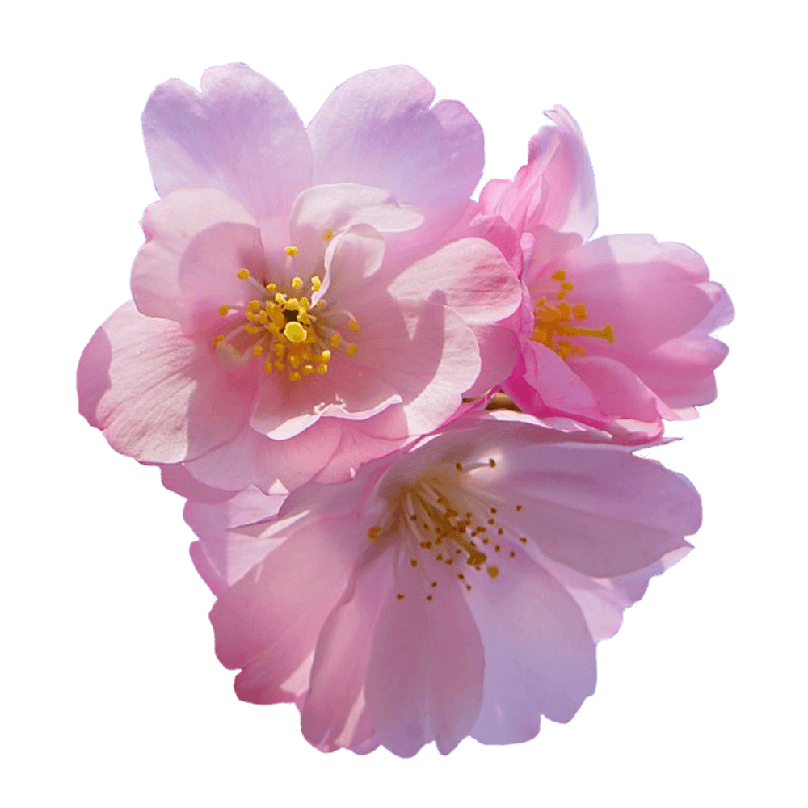

Crimson Text is a font family for book production in the tradition of beautiful oldstyle typefaces.
Crimson Text is inspired by the fantastic work of people like Jan Tschichold, Robert Slimbach and Jonathan Hoefler.
Font available from Google Fonts.
A Cherry Blossom is a flower of many trees of genus Prunus. The most well-known species is the Japanese cherry, commonly called Sakura.
The pale blooms are a symbol of spring because it is a time of renewal. However, because the blooms are short-lived, they are also symbolic of the fleeting nature of life.
Most varieties of Cherry Blossom produce light pink to white blossoms, but there are also cherry trees with dark pink, yellow or green blossoms. The colour of some varieties’ of Cherry Blossoms may change while they are in bloom.